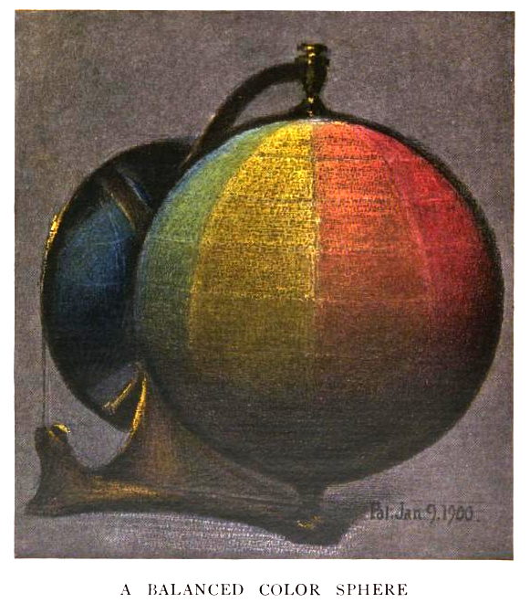

Welcome to this visualization of color company offerings. I used Munsell scales from Golden and Liquitex to map their measurements to the closest approximation in an munsell to rgb chart.
Built with D3.js. Sunburst zooming based on an example by Mike Bostock.
Golden Acrylic Munsell Notation
Liquitex Acrylic Munsell Notation